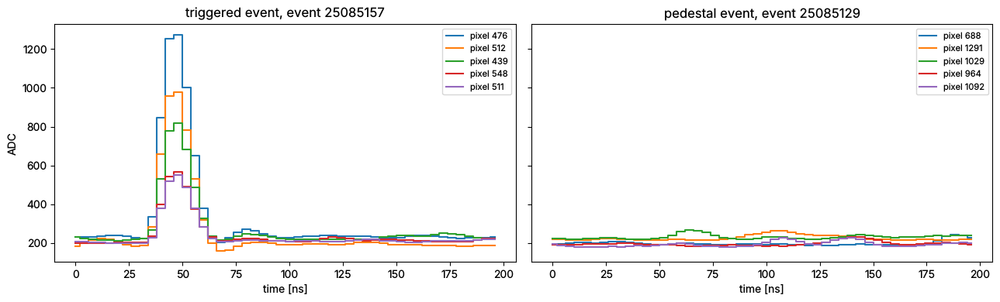
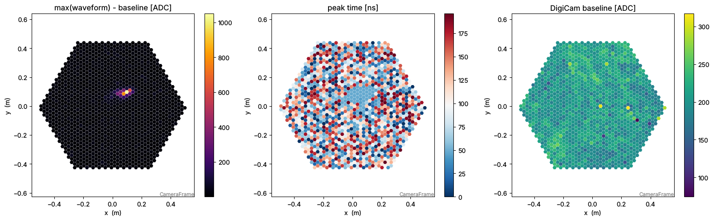
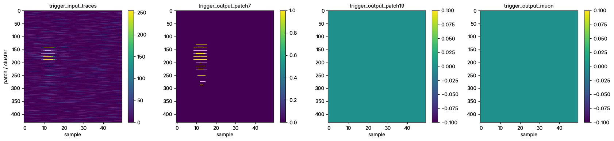
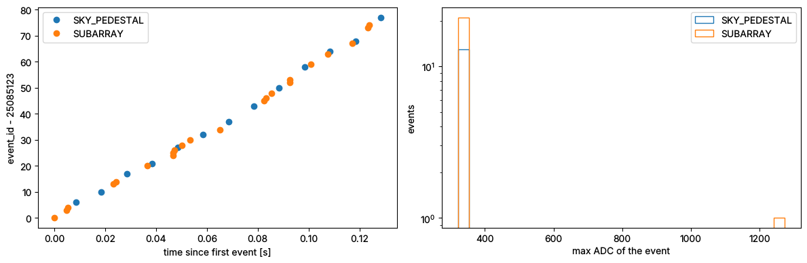

Note
This page is the notebook notebooks/sst1m_read_zfits_event_source.ipynb of the
sst1mpipe repository:
download it to run it yourself.
Reading SST-1M raw data (zfits) with the SST1MEventSource
This notebook shows how to read the SST-1M raw data files (R0, *.fits.fz, written by the DigiCam camera server) with the ctapipe event source of sst1mpipe, sst1mpipe.io.sst1m_event_source.SST1MEventSource, and how to explore what it gives you:
Opening a file: through the generic
ctapipe.io.EventSourceor theSST1MEventSourcedirectlyRun level information: telescope, run, target, pointing, observation / scheduling blocks, DigiCam configuration, subarray
Looping over the events and exploring the containers (
index,trigger,r0,monitoring)Visualising the waveforms, the camera images and the trigger traces
Some run level summaries (event types, trigger rate)
Under the hood: the same file read directly with
protozfits
The files used here are the test files distributed with sst1mpipe (sst1mpipe/resources/test_data/zfits, stored with git LFS: run git lfs pull if they are only pointers). Replace input_file by any SST-1M raw data file.
[1]:
import collections
import astropy.units as u
import matplotlib.pyplot as plt
import numpy as np
from astropy.io import fits
from astropy.table import Table
from ctapipe.containers import EventType
from ctapipe.io import EventSource
from ctapipe.visualization import CameraDisplay
from sst1mpipe.io.containers import CameraEventType
from sst1mpipe.io.sst1m_event_source import SST1MEventSource
from sst1mpipe.resources import TEST_DATA_DIR
1. Opening a file
The test data directory contains a few short runs of both telescopes: a dark run, transitions between two wobbles and Mrk 421 observations. The file names follow SST1M<telescope>_<date>_<run>.fits.fz.
[2]:
zfits_dir = TEST_DATA_DIR / "zfits"
for path in sorted(zfits_dir.iterdir()):
print(f"{path.name:32s} TARGET = {fits.getheader(path, 'Events').get('TARGET')}")
SST1M1_20260120_1179.fits.fz TARGET = MRK421_W1,166.994800,38.105300
SST1M1_20260121_0206.fits.fz TARGET = Transition
SST1M2_20260119_0007.fits.fz TARGET = DARK
SST1M2_20260120_1102.fits.fz TARGET = MRK421_W1,166.994800,38.105300
SST1M2_20260121_0585.fits.fz TARGET = Transition
[3]:
# Mrk 421 observation (wobble W1) of the telescope SST1M-2: 35 events
input_file = zfits_dir / "SST1M2_20260120_1102.fits.fz"
SST1MEventSource is registered as a ctapipe I/O plugin (entry point ctapipe_io in pyproject.toml), so the generic ctapipe.io.EventSource recognises the SST-1M files by itself (SST1MEventSource.is_compatible checks that the file has an Events table of DataModel.CameraEvent protobuf messages):
[4]:
print("is_compatible:", SST1MEventSource.is_compatible(input_file))
source = EventSource(input_file, max_events=10)
print(type(source))
is_compatible: True
<class 'sst1mpipe.io.sst1m_event_source.SST1MEventSource'>
You can also instantiate it explicitly, which lets you pass its options (ctapipe traitlets), e.g. max_events, a manual pointing (pointing_ra, pointing_dec, in deg) which overrides the TARGET field of the file, or the wrongly connected camera modules (swapped_modules). Use help(SST1MEventSource) for the full list. The event source reads a single file: loop over the files to read several runs.
[5]:
for name, trait in SST1MEventSource.class_traits(config=True).items():
print(f"{name:28s} {trait.help[:90]}")
allowed_tels list of allowed tel_ids, others will be ignored. If None, all telescopes in the input stre
focal_length_choice Which focal length to use for the camera frame transformations.
input_url Path to the input file containing events.
max_events Maximum number of events that will be read from the file
pointing_dec Pointing declination in deg. Overrides the TARGET field of the file.
pointing_ra Pointing right ascension in deg. Overrides the TARGET field of the file.
swapped_modules Wrongly connected modules: the pixels of the two modules are swapped for the events of the
2. Run level information
Everything which does not change from event to event is available as attributes of the event source, without reading any event.
[6]:
print("telescope id :", source.tel_id)
print("run id (obs_id):", source.run_id, " run number:", source.run_number)
print("target :", source.target)
print("wobble :", source.wobble)
print("pointing (ICRS):", source.pointing)
print("manual pointing:", source.pointing_manual)
print("pedestal events:", source.pedestal_event_type)
print("SWAT event ids :", source.swat_event_ids_available)
print("data levels :", source.datalevels)
print("simulation :", source.is_simulation)
telescope id : 22
run id (obs_id): 202601201102 run number: 1102
target : MRK421
wobble : W1
pointing (ICRS): <SkyCoord (ICRS): (ra, dec) in deg
(166.9948, 38.1053)>
manual pointing: False
pedestal events: EventType.SKY_PEDESTAL
SWAT event ids : True
data levels : (<DataLevel.R0: 1>,)
simulation : False
Observation and scheduling blocks
They follow the ctapipe data model and are written in the DL1 files by sst1mpipe-process. The observation block is a SST1MObservationBlockContainer (with the target and wobble of the run in addition to the ctapipe fields), the start and duration of the run come from the DATE and DATEEND fields of the file header.
[7]:
observation_block = source.observation_blocks[source.run_id]
for key, value in observation_block.items():
print(f"{key:26s} {value}")
obs_id 202601201102
sb_id 202601201102
producer_id SST1M-22
state ObservationBlockState.UNKNOWN
subarray_pointing_lat 38.1053 deg
subarray_pointing_lon 166.9948 deg
subarray_pointing_frame CoordinateFrameType.ICRS
scheduled_duration nan min
scheduled_start_time 0.0
actual_start_time 2026-01-21T03:06:31.000
actual_duration 0.0 min
target MRK421
wobble W1
[8]:
scheduling_block = source.scheduling_blocks[source.run_id]
for key, value in scheduling_block.items():
print(f"{key:26s} {value}")
sb_id 202601201102
sb_type SchedulingBlockType.OBSERVATION
producer_id SST1M-22
observing_mode ObservingMode.WOBBLE
pointing_mode PointingMode.TRACK
The subarray
The SubarrayDescription only contains the telescope of the file. It gives the optics and the camera (geometry, readout: sampling rate, number of samples…).
[9]:
subarray = source.subarray
subarray.info()
Subarray : SST1M_miniarray
Num Tels : 1
Footprint: 0.02 km2
Height : 511.20 m
Lon/Lat : 14.782501388888885 deg, 49.912441666666666 deg
Type Count Tel IDs
-------------- ----- -------
SST_1M_DigiCam 1 22
[10]:
tel = subarray.tel[source.tel_id]
camera = tel.camera
print(tel)
print("pixels :", camera.geometry.n_pixels)
print("pixel shape :", camera.geometry.pix_type)
print("sampling rate :", camera.readout.sampling_rate)
print("reference pulse :", camera.readout.reference_pulse_shape.shape)
print("focal length :", tel.optics.equivalent_focal_length)
SST_1M_DigiCam
pixels : 1296
pixel shape : PixelShape.HEXAGON
sampling rate : 0.25 GHz
reference pulse : (1, 1520)
focal length : 5.599999904632568 m
DigiCam configuration
The DigicamConfig table of the file (configuration of the DigiCam boards) is read into a DigicamConfigContainer. The arrays have one entry per board slot, 0 for the empty slots.
[11]:
digicam_config = source.digicam_config
print(digicam_config)
{'digicam_time_nanosec': 247889788,
'digicam_time_sec': 6865,
'firmware_card_type': array([0, 1, 1, 1, 1, 1, 1, 1, 1, 1, 0, 1, 1, 1, 1, 1, 1, 1, 1, 1, 0, 1,
1, 1, 1, 1, 1, 1, 1, 1, 0, 0, 0, 0, 0, 0, 0, 0, 0], dtype=uint8),
'firmware_code': array([0, 0, 0, 0, 0, 0, 0, 0, 0, 0, 0, 0, 0, 0, 0, 0, 0, 0, 0, 0, 0, 0,
0, 0, 0, 0, 0, 0, 0, 0, 0, 0, 0, 0, 0, 0, 0, 0, 0], dtype=uint8),
'firmware_rev': array([ 0, 39, 39, 39, 39, 39, 39, 39, 39, 39, 0, 39, 39, 39, 39, 39, 39,
39, 39, 39, 0, 39, 39, 39, 39, 39, 39, 39, 39, 39, 0, 46, 46, 48,
46, 46, 48, 46, 46], dtype=uint8),
'firmware_vers': array([0, 1, 1, 1, 1, 1, 1, 1, 1, 1, 0, 1, 1, 1, 1, 1, 1, 1, 1, 1, 0, 1,
1, 1, 1, 1, 1, 1, 1, 1, 0, 1, 1, 1, 1, 1, 1, 1, 1], dtype=uint8),
'gateware_card_type': array([0, 1, 1, 1, 1, 1, 1, 1, 1, 1, 0, 1, 1, 1, 1, 1, 1, 1, 1, 1, 0, 1,
1, 1, 1, 1, 1, 1, 1, 1, 0, 0, 0, 0, 0, 0, 0, 0, 0], dtype=uint8),
'gateware_code': array([0, 0, 0, 0, 0, 0, 0, 0, 0, 0, 0, 0, 0, 0, 0, 0, 0, 0, 0, 0, 0, 0,
0, 0, 0, 0, 0, 0, 0, 0, 0, 0, 0, 0, 0, 0, 0, 0, 0], dtype=uint8),
'gateware_rev': array([ 0, 25, 25, 25, 25, 25, 25, 25, 25, 25, 0, 25, 25, 25, 25, 25, 25,
25, 25, 25, 0, 25, 25, 25, 25, 25, 25, 25, 25, 25, 0, 23, 23, 23,
23, 23, 23, 23, 23], dtype=uint8),
'gateware_vers': array([0, 1, 1, 1, 1, 1, 1, 1, 1, 1, 0, 1, 1, 1, 1, 1, 1, 1, 1, 1, 0, 1,
1, 1, 1, 1, 1, 1, 1, 1, 0, 1, 1, 1, 1, 1, 1, 1, 1], dtype=uint8),
'hv': array([0, 2, 2, 1, 2, 2, 2, 2, 2, 2, 0, 1, 1, 1, 1, 2, 1, 1, 1, 2, 0, 1,
1, 1, 1, 1, 1, 1, 1, 1, 0, 0, 2, 1, 0, 2, 1, 0, 2], dtype=uint8),
'operation_data': 0,
'operation_id': 0,
'protocol_vers': array([255, 1, 1, 1, 1, 1, 1, 1, 1, 1, 255, 1, 1,
1, 1, 1, 1, 1, 1, 1, 255, 1, 1, 1, 1, 1,
1, 1, 1, 1, 255, 1, 1, 1, 1, 1, 1, 1, 1],
dtype=uint8),
'sn': array([ 0, 1120024, 1120025, 1110016, 1120027, 1120020, 1120029,
1120026, 1120023, 1120022, 0, 1110014, 1110005, 1110012,
1110015, 0, 1110017, 1110018, 1110019, 1120021, 0,
1110003, 1110004, 1110005, 1110006, 1110007, 1110008, 1110009,
1110010, 1110011, 0, 3100001, 3120007, 3110002, 3100001,
3120007, 3110002, 3100001, 3120007], dtype=uint32)}
[12]:
Table({key: value for key, value in digicam_config.items() if np.ndim(value) == 1})[:12]
[12]:
| protocol_vers | sn | hv | gateware_rev | gateware_vers | gateware_code | gateware_card_type | firmware_rev | firmware_vers | firmware_code | firmware_card_type |
|---|---|---|---|---|---|---|---|---|---|---|
| uint8 | uint32 | uint8 | uint8 | uint8 | uint8 | uint8 | uint8 | uint8 | uint8 | uint8 |
| 255 | 0 | 0 | 0 | 0 | 0 | 0 | 0 | 0 | 0 | 0 |
| 1 | 1120024 | 2 | 25 | 1 | 0 | 1 | 39 | 1 | 0 | 1 |
| 1 | 1120025 | 2 | 25 | 1 | 0 | 1 | 39 | 1 | 0 | 1 |
| 1 | 1110016 | 1 | 25 | 1 | 0 | 1 | 39 | 1 | 0 | 1 |
| 1 | 1120027 | 2 | 25 | 1 | 0 | 1 | 39 | 1 | 0 | 1 |
| 1 | 1120020 | 2 | 25 | 1 | 0 | 1 | 39 | 1 | 0 | 1 |
| 1 | 1120029 | 2 | 25 | 1 | 0 | 1 | 39 | 1 | 0 | 1 |
| 1 | 1120026 | 2 | 25 | 1 | 0 | 1 | 39 | 1 | 0 | 1 |
| 1 | 1120023 | 2 | 25 | 1 | 0 | 1 | 39 | 1 | 0 | 1 |
| 1 | 1120022 | 2 | 25 | 1 | 0 | 1 | 39 | 1 | 0 | 1 |
| 255 | 0 | 0 | 0 | 0 | 0 | 0 | 0 | 0 | 0 | 0 |
| 1 | 1110014 | 1 | 25 | 1 | 0 | 1 | 39 | 1 | 0 | 1 |
3. Looping over the events
Iterating over the source gives one SST1MArrayEventContainer per camera event. It is a ctapipe ArrayEventContainer whose R0 and monitoring containers have extra SST-1M fields. Only the R0 data, the trigger and the pointing are filled by the event source: the R1/DL0/DL1 containers are filled later by the calibration and the image processing (see sst1mpipe-process).
The event source should be used as a context manager (it closes the file at the end).
[13]:
with EventSource(input_file, max_events=3) as source:
for event in source:
print(f"count={event.count} obs_id={event.index.obs_id} event_id={event.index.event_id} "
f"type={event.trigger.event_type.name} tels={event.trigger.tels_with_trigger}")
count=0 obs_id=202601201102 event_id=25085123 type=SUBARRAY tels=[22]
count=1 obs_id=202601201102 event_id=25085126 type=SUBARRAY tels=[22]
count=2 obs_id=202601201102 event_id=25085127 type=SUBARRAY tels=[22]
event still holds the last event of the loop. A ctapipe container prints its fields with their description:
[14]:
print(type(event))
print(list(event.keys()))
<class 'sst1mpipe.io.containers.SST1MArrayEventContainer'>
['index', 'r0', 'r1', 'dl0', 'dl1', 'dl2', 'simulation', 'trigger', 'count', 'monitoring', 'muon']
[15]:
print(event.index) # print: the values of the fields
event.index # repr: the description and default of each field
{'event_id': 25085127, 'obs_id': 202601201102}
[15]:
ctapipe.containers.EventIndexContainer:
obs_id: Observation Block ID with default
18446744073709551615
event_id: Array Event ID with default 18446744073709551615
The trigger
event.trigger.event_type is the ctapipe EventType: SUBARRAY for the events triggered by the camera and the pedestal type of the run for the internal triggers (SKY_PEDESTAL, or DARK_PEDESTAL / ELECTRONIC_PEDESTAL for the dark / bias runs). The time is the DigiCam clock as an astropy.time.Time.
[16]:
print(event.trigger)
print("time (ISO, UTC):", event.trigger.time.utc.isot)
{'event_type': <EventType.SUBARRAY: 32>,
'tel': {22: {'event_type': <EventType.SUBARRAY: 32>,
'n_trigger_pixels': -1,
'time': <Time object: scale='tai' format='unix_tai' value=1768964826.7517002>,
'trigger_pixels': None}},
'tels_with_trigger': [22],
'time': <Time object: scale='tai' format='unix_tai' value=1768964826.7517002>}
time (ISO, UTC): 2026-01-21T03:06:29.752
The R0 data of the telescope
event.r0.tel is a map tel_id -> SST1MR0CameraContainer. In addition to the ctapipe waveform (shape (n_channels, n_pixels, n_samples), one gain channel for DigiCam, pixels sorted by pixel id), it contains the DigiCam specific fields: the baseline computed by DigiCam (pedestal), the pixel flags, the camera event type (a CameraEventType flag), the clocks, and the trigger traces.
[17]:
tel_id = source.tel_id
r0 = event.r0.tel[tel_id]
print(r0)
{'_event_type': <CameraEventType.PATCH7: 1>,
'camera_event_number': 3612335,
'event_time': <Time object: scale='tai' format='unix_tai' value=1768964826.7517002>,
'gps_time': None,
'pedestal': array([286.9375, 180.625 , 201.625 , ..., 181.1875, 233. , 194.6875]),
'pixel_flags': array([1, 1, 1, ..., 1, 1, 1], dtype=uint16),
'trigger_input_traces': array([[ 8, 2, 3, ..., 0, 0, 0],
[ 0, 0, 0, ..., 0, 0, 0],
[18, 12, 9, ..., 0, 0, 0],
...,
[ 0, 0, 0, ..., 15, 31, 39],
[ 0, 0, 0, ..., 0, 0, 0],
[ 0, 0, 0, ..., 27, 38, 21]], dtype=uint8),
'trigger_output_muon': array([[0, 0, 0, ..., 0, 0, 0],
[0, 0, 0, ..., 0, 0, 0],
[0, 0, 0, ..., 0, 0, 0],
...,
[0, 0, 0, ..., 0, 0, 0],
[0, 0, 0, ..., 0, 0, 0],
[0, 0, 0, ..., 0, 0, 0]], dtype=uint8),
'trigger_output_patch19': array([[0, 0, 0, ..., 0, 0, 0],
[0, 0, 0, ..., 0, 0, 0],
[0, 0, 0, ..., 0, 0, 0],
...,
[0, 0, 0, ..., 0, 0, 0],
[0, 0, 0, ..., 0, 0, 0],
[0, 0, 0, ..., 0, 0, 0]], dtype=uint8),
'trigger_output_patch7': array([[0, 0, 0, ..., 0, 0, 0],
[0, 0, 0, ..., 0, 0, 0],
[0, 0, 0, ..., 0, 0, 0],
...,
[0, 0, 0, ..., 0, 0, 0],
[0, 0, 0, ..., 0, 0, 0],
[0, 0, 0, ..., 0, 0, 0]], dtype=uint8),
'waveform': array([[[295, 293, 291, ..., 287, 285, 284],
[181, 179, 180, ..., 182, 179, 175],
[201, 199, 202, ..., 194, 197, 198],
...,
[174, 172, 172, ..., 176, 176, 176],
[224, 223, 225, ..., 255, 258, 248],
[190, 190, 189, ..., 190, 195, 194]]], dtype=int16)}
[18]:
# a quick overview of all the fields: type and shape
for key, value in r0.items():
shape = getattr(value, "shape", "")
dtype = getattr(value, "dtype", type(value).__name__)
print(f"{key:24s} {str(dtype):12s} {shape}")
waveform int16 (1, 1296, 50)
pixel_flags uint16 (1296,)
pedestal float64 (1296,)
camera_event_number int
event_time Time ()
gps_time NoneType
_event_type CameraEventType
trigger_input_traces uint8 (432, 50)
trigger_output_patch7 uint8 (432, 50)
trigger_output_patch19 uint8 (432, 50)
trigger_output_muon uint8 (432, 50)
[19]:
print("camera event number:", r0.camera_event_number)
print("camera event type :", r0.event_type, "->", repr(r0.event_type))
print("is internal trigger:", CameraEventType.INTERNAL in r0.event_type)
print("event time (TAI) :", r0.event_time.unix_tai, "s")
print("GPS time :", r0.gps_time)
print("baseline (ADC) :", r0.pedestal[:5], "...")
print("pixel flags :", np.unique(r0.pixel_flags, return_counts=True))
camera event number: 3612335
camera event type : CameraEventType.PATCH7 -> <CameraEventType.PATCH7: 1>
is internal trigger: False
event time (TAI) : 1768964826.7517002 s
GPS time : None
baseline (ADC) : [286.9375 180.625 201.625 176.375 194.3125] ...
pixel flags : (array([1], dtype=uint16), array([1296]))
The monitoring
The pointing in RA / Dec of the run is filled for each event. The altitude / azimuth of the telescope and the camera monitoring (pedestal statistics…) are filled by the monitoring source SST1MMonitoringSource from the output of sst1mpipe-monitoring, so they are empty here.
[20]:
pointing = event.monitoring.pointing
print("RA :", pointing.array_ra.to(u.deg))
print("Dec:", pointing.array_dec.to(u.deg))
print("Alt:", pointing.array_altitude, "(from the monitoring source)")
RA : 166d59m41.28s
Dec: 38d06m19.08s
Alt: nan rad (from the monitoring source)
4. Visualising an event
Let’s take the brightest triggered (SUBARRAY) event and the first pedestal event of the run.
[21]:
def max_signal(event):
# largest signal above the DigiCam baseline in the camera (ADC)
r0 = next(iter(event.r0.tel.values()))
return (r0.waveform[0] - r0.pedestal[:, None]).max()
shower_event, pedestal_event = None, None
with EventSource(input_file) as source:
for event in source:
event_type = event.trigger.event_type
if event_type == EventType.SUBARRAY and (shower_event is None or max_signal(event) > max_signal(shower_event)):
shower_event = event
if event_type == source.pedestal_event_type and pedestal_event is None:
pedestal_event = event
print(shower_event.index, shower_event.trigger.event_type)
print(pedestal_event.index, pedestal_event.trigger.event_type)
{'event_id': 25085157, 'obs_id': 202601201102} EventType.SUBARRAY
{'event_id': 25085129, 'obs_id': 202601201102} EventType.SKY_PEDESTAL
Waveforms
The waveforms are in ADC counts, with the DigiCam baseline (pedestal) not subtracted. We plot the brightest pixels of the triggered event (largest signal above baseline) and a few pixels of the pedestal event.
[22]:
geometry = subarray.tel[tel_id].camera.geometry
sampling_rate = subarray.tel[tel_id].camera.readout.sampling_rate
fig, axes = plt.subplots(1, 2, figsize=(13, 4), sharey=True)
for ax, ev, title in zip(axes, [shower_event, pedestal_event], ["triggered event", "pedestal event"], strict=True):
r0 = ev.r0.tel[tel_id]
waveform = r0.waveform[0] # single gain channel
time = np.arange(waveform.shape[-1]) / sampling_rate.to_value(u.GHz) # ns
signal = (waveform - r0.pedestal[:, None]).max(axis=1)
for pix in np.argsort(signal)[::-1][:5]:
ax.plot(time, waveform[pix], drawstyle="steps-mid", label=f"pixel {pix}")
ax.set_title(f"{title}, event {ev.index.event_id}")
ax.set_xlabel("time [ns]")
ax.legend(fontsize=8)
axes[0].set_ylabel("ADC")
plt.tight_layout()

Camera images
A simple R0 “image”: the maximum of each waveform minus the DigiCam baseline. Proper images (in p.e.) need the R0 -> R1 calibration and the charge extraction done by sst1mpipe-process.
[23]:
fig, axes = plt.subplots(1, 3, figsize=(16, 5))
r0 = shower_event.r0.tel[tel_id]
image = r0.waveform[0].max(axis=1) - r0.pedestal
display = CameraDisplay(geometry, image=image, ax=axes[0], title="max(waveform) - baseline [ADC]")
display.add_colorbar(ax=axes[0])
peak_time = r0.waveform[0].argmax(axis=1) / sampling_rate.to_value(u.GHz)
display = CameraDisplay(geometry, image=peak_time, ax=axes[1], title="peak time [ns]", cmap="RdBu_r")
display.add_colorbar(ax=axes[1])
display = CameraDisplay(geometry, image=r0.pedestal, ax=axes[2], title="DigiCam baseline [ADC]", cmap="viridis")
display.add_colorbar(ax=axes[2])
plt.tight_layout()

Trigger traces
The trigger input traces (432 trigger patches) and the trigger outputs of the clusters of 7 and 19 patches and of the muon trigger are also stored, as (n_patches, n_samples) arrays (filled with nan when absent from the file). They are in patch order (patch_sw_id, the patch of 3 pixels DigiCam.patch_matrix, the central patch for the outputs): the reader takes care of the order of the camera sectors of each telescope (sst1mpipe.constants.TRIGGER_SECTOR_ORDER) and of the wrongly
connected modules, as for the pixels. The outputs are 0/1: here the event was triggered by the 7 patch clusters (camera event type PATCH7).
[24]:
r0 = shower_event.r0.tel[tel_id]
names = ["trigger_input_traces", "trigger_output_patch7", "trigger_output_patch19", "trigger_output_muon"]
fig, axes = plt.subplots(1, 4, figsize=(17, 4))
for ax, name in zip(axes, names, strict=True):
traces = getattr(r0, name)
im = ax.imshow(traces, aspect="auto", interpolation="none")
ax.set_title(name, fontsize=10)
ax.set_xlabel("sample")
fig.colorbar(im, ax=ax)
axes[0].set_ylabel("patch / cluster")
plt.tight_layout()

5. Run level summaries
The events are read one by one, so it is easy to collect a few quantities over the whole run: event types, event times, baselines…
[25]:
rows = []
with EventSource(input_file) as source:
for event in source:
r0 = event.r0.tel[source.tel_id]
rows.append({
"event_id": event.index.event_id,
"camera_event_number": r0.camera_event_number,
"time": event.trigger.time.unix_tai,
"event_type": event.trigger.event_type.name,
"camera_event_type": str(r0.event_type),
"mean_baseline": r0.pedestal.mean(),
"max_adc": r0.waveform.max(),
})
events = Table(rows)
events["dt"] = np.diff(events["time"], prepend=events["time"][0]) * 1e3
events["dt"].unit = u.ms
events[:10]
[25]:
| event_id | camera_event_number | time | event_type | camera_event_type | mean_baseline | max_adc | dt |
|---|---|---|---|---|---|---|---|
| ms | |||||||
| int64 | int64 | float64 | str12 | str24 | float64 | int16 | float64 |
| 25085123 | 3612333 | 1768964826.7464712 | SUBARRAY | CameraEventType.PATCH7 | 204.08931327160494 | 330 | 0.0 |
| 25085126 | 3612334 | 1768964826.7513413 | SUBARRAY | CameraEventType.PATCH7 | 203.91575038580248 | 332 | 4.870176315307617 |
| 25085127 | 3612335 | 1768964826.7517002 | SUBARRAY | CameraEventType.PATCH7 | 203.90586419753086 | 331 | 0.35881996154785156 |
| 25085129 | 3612336 | 1768964826.7549167 | SKY_PEDESTAL | CameraEventType.INTERNAL | 204.06394675925927 | 327 | 3.2165050506591797 |
| 25085133 | 3612337 | 1768964826.7649167 | SKY_PEDESTAL | CameraEventType.INTERNAL | 203.9892939814815 | 324 | 9.999990463256836 |
| 25085136 | 3612338 | 1768964826.7697473 | SUBARRAY | CameraEventType.PATCH7 | 203.92447916666666 | 327 | 4.830598831176758 |
| 25085137 | 3612339 | 1768964826.7706814 | SUBARRAY | CameraEventType.PATCH7 | 203.83858989197532 | 334 | 0.9341239929199219 |
| 25085140 | 3612340 | 1768964826.7749166 | SKY_PEDESTAL | CameraEventType.INTERNAL | 204.0570023148148 | 343 | 4.235267639160156 |
| 25085143 | 3612341 | 1768964826.783039 | SUBARRAY | CameraEventType.PATCH7 | 203.84495563271605 | 322 | 8.122444152832031 |
| 25085144 | 3612342 | 1768964826.7849166 | SKY_PEDESTAL | CameraEventType.INTERNAL | 204.05102237654322 | 322 | 1.8775463104248047 |
[26]:
print(collections.Counter(events["event_type"]))
print(collections.Counter(events["camera_event_type"]))
duration = events["time"][-1] - events["time"][0]
print(f"{len(events)} events in {duration:.3f} s -> {len(events) / duration:.1f} Hz")
Counter({'SUBARRAY': 22, 'SKY_PEDESTAL': 13})
Counter({'CameraEventType.PATCH7': 22, 'CameraEventType.INTERNAL': 13})
35 events in 0.128 s -> 272.5 Hz
[27]:
fig, axes = plt.subplots(1, 2, figsize=(12, 4))
t0, id0 = events["time"][0], events["event_id"][0]
bins = np.histogram_bin_edges(events["max_adc"], bins=30)
for event_type in np.unique(events["event_type"]):
mask = events["event_type"] == event_type
axes[0].plot(events["time"][mask] - t0, events["event_id"][mask] - id0, "o", label=event_type)
axes[1].hist(events["max_adc"][mask], bins=bins, histtype="step", label=event_type)
axes[0].set(xlabel="time since first event [s]", ylabel=f"event_id - {id0}")
axes[1].set(xlabel="max ADC of the event", ylabel="events", yscale="log")
for ax in axes:
ax.legend()
plt.tight_layout()

6. Under the hood: the raw zfits file
The event source reads the files with protozfits. If you need a field of the DigiCam CameraEvent protobuf message which is not copied to the ctapipe containers, you can read the file directly. Each row of the Events table is a named tuple; the most useful fields are listed below (see sst1mpipe.io.sst1m_event_source.fill_r0_event for how they are converted).
[28]:
with fits.open(input_file) as hdul:
hdul.info()
Filename: sst1mpipe/resources/test_data/zfits/SST1M2_20260120_1102.fits.fz
No. Name Ver Type Cards Dimensions Format
0 PRIMARY 1 PrimaryHDU 8 ()
1 DigicamConfig 1 BinTableHDU 122 1R x 15C [1QB, 1QB, 1QB, 1QB, 1QB, 1QB, 1QB, 1QB, 1QB, 1QB, 1QB, 1QB, 1QB, 1QB, 1QB]
2 Events 1 BinTableHDU 210 1R x 33C [1QB, 1QB, 1QB, 1QB, 1QB, 1QB, 1QB, 1QB, 1QB, 1QB, 1QB, 1QB, 1QB, 1QB, 1QB, 1QB, 1QB, 1QB, 1QB, 1QB, 1QB, 1QB, 1QB, 1QB, 1QB, 1QB, 1QB, 1QB, 1QB, 1QB, 1QB, 1QB, 1QB]
[29]:
header = fits.getheader(input_file, "Events")
for key in ["TARGET", "PBFHEAD", "DATE", "DATEEND", "ZNAXIS2"]:
print(f"{key:8s} = {header.get(key)!r:40s} / {header.comments[key]}")
TARGET = 'MRK421_W1,166.994800,38.105300' / Current Target
PBFHEAD = 'DataModel.CameraEvent' / Written message name
DATE = '2026-01-21T03:06:31' / File creation date
DATEEND = '2026-01-21T03:06:31' / File closing date
ZNAXIS2 = 35 / Number of uncompressed rows
[30]:
from protozfits import File
with File(str(input_file)) as f:
print(f)
raw_event = next(iter(f.Events))
print("telescopeID :", raw_event.telescopeID)
print("eventNumber :", raw_event.eventNumber, "(-> r0.camera_event_number)")
print("arrayEvtNum :", raw_event.arrayEvtNum, "(SWAT event id -> index.event_id)")
print("event_type :", raw_event.event_type, "->", CameraEventType(raw_event.event_type))
print("local time :", raw_event.local_time_sec, "s", raw_event.local_time_nanosec, "ns")
waveforms = raw_event.hiGain.waveforms
print("hiGain.waveforms :", waveforms._fields)
print("samples :", waveforms.samples.shape, "(n_pixels * n_samples, flat, unsorted pixels)")
print("pixelsIndices :", waveforms.pixelsIndices[:10], "...")
print("baselines :", waveforms.baselines[:5], "(/ 16 -> r0.pedestal)")
File({'DigicamConfig': Table(1xDataModel.DigicamConfig), 'Events': Table(35xDataModel.CameraEvent)})
telescopeID : 22
eventNumber : 3612333 (-> r0.camera_event_number)
arrayEvtNum : 25085123 (SWAT event id -> index.event_id)
event_type : 1 -> CameraEventType.PATCH7
local time : 1768964826 s 746471248 ns
hiGain.waveforms : ('samples', 'pixelsIndices', 'firstSplIdx', 'num_samples', 'baselines', 'peak_time_pos', 'time_over_threshold')
samples : (64800,) (n_pixels * n_samples, flat, unsorted pixels)
pixelsIndices : [146 117 177 145 213 178 179 147 249 250] ...
baselines : [3622 3136 3571 3810 3405] (/ 16 -> r0.pedestal)
Going further
sst1mpipe-processruns the full chain R0 -> DL1 on these files (R0 -> R1 calibration, image extraction, cleaning, Hillas parameters) and writes the ctapipe DL1 format.sst1mpipe-monitoringcomputes the pedestal statistics and the pointing, read back by theSST1MMonitoringSourceintoevent.monitoring.notebooks/sst1m_raw_r0_r1.ipynbshows the R0 -> R1 calibration.